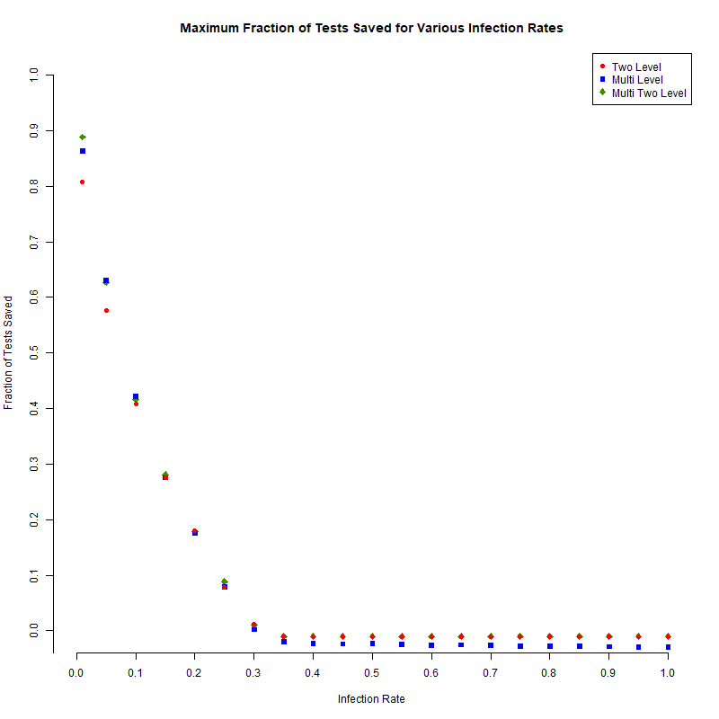
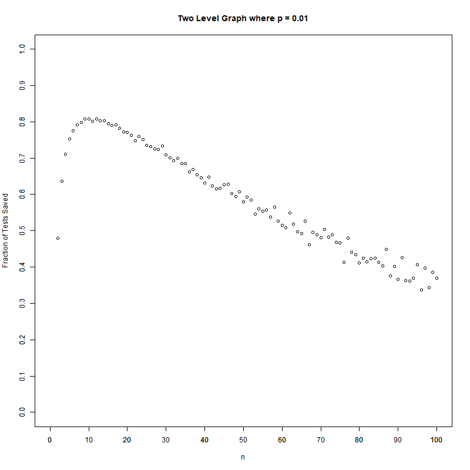

Maximum Efficiency Saved

Two-Level Method Graph

Multi-Level Method Graphs
Multi-Level Method Scatterplot at 1% Infection Rate
Multi-Level Method Scatterplot at 5% Infection Rate
Multi-Level Method Scatterplot at 10% Infection Rate
Multi-Level Method Scatterplot at 15% Infection Rate
Multi-Level Method Scatterplot at 20% Infection Rate
Multi-Level Method Scatterplot at 25% Infection Rate
Multi-Level Method Scatterplot at 30% Infection Rate
Multi-Level Method Scatterplot at 35% Infection Rate
Multi-Level Method Scatterplot at 40% Infection Rate
Multi-Level Method Scatterplot at 45% Infection Rate
Multi-Level Method Scatterplot at 50% Infection Rate
Multi-Level Method Scatterplot at 55% Infection Rate
Multi-Level Method Scatterplot at 60% Infection Rate
Multi-Level Method Scatterplot at 65% Infection Rate
Multi-Level Method Scatterplot at 70% Infection Rate
Multi-Level Method Scatterplot at 75% Infection Rate
Multi-Level Method Scatterplot at 80% Infection Rate
Multi-Level Method Scatterplot at 85% Infection Rate
Multi-Level Method Scatterplot at 90% Infection Rate
Multi-Level Method Scatterplot at 95% Infection Rate
Multi-Level Method Scatterplot at 100% Infection Rate
Multi Two-Level Method Graphs
Multi Two-Level Method Scatterplot at 1% Infection Rate
Multi Two-Level Method Scatterplot at 5% Infection Rate
Multi Two-Level Method Scatterplot at 10% Infection Rate
Multi Two-Level Method Scatterplot at 15% Infection Rate
Multi Two-Level Method Scatterplot at 20% Infection Rate
Multi Two-Level Method Scatterplot at 25% Infection Rate
Multi Two-Level Method Scatterplot at 30% Infection Rate
Multi Two-Level Method Scatterplot at 35% Infection Rate
Multi Two-Level Method Scatterplot at 40% Infection Rate
Multi Two-Level Method Scatterplot at 45% Infection Rate
Multi Two-Level Method Scatterplot at 50% Infection Rate
Multi Two-Level Method Scatterplot at 55% Infection Rate
Multi Two-Level Method Scatterplot at 60% Infection Rate
Multi Two-Level Method Scatterplot at 65% Infection Rate
Multi Two-Level Method Scatterplot at 70% Infection Rate
Multi Two-Level Method Scatterplot at 75% Infection Rate
Multi Two-Level Method Scatterplot at 80% Infection Rate
Multi Two-Level Method Scatterplot at 85% Infection Rate
Multi Two-Level Method Scatterplot at 90% Infection Rate
Multi Two-Level Method Scatterplot at 95% Infection Rate
Multi Two-Level Method Scatterplot at 100% Infection Rate